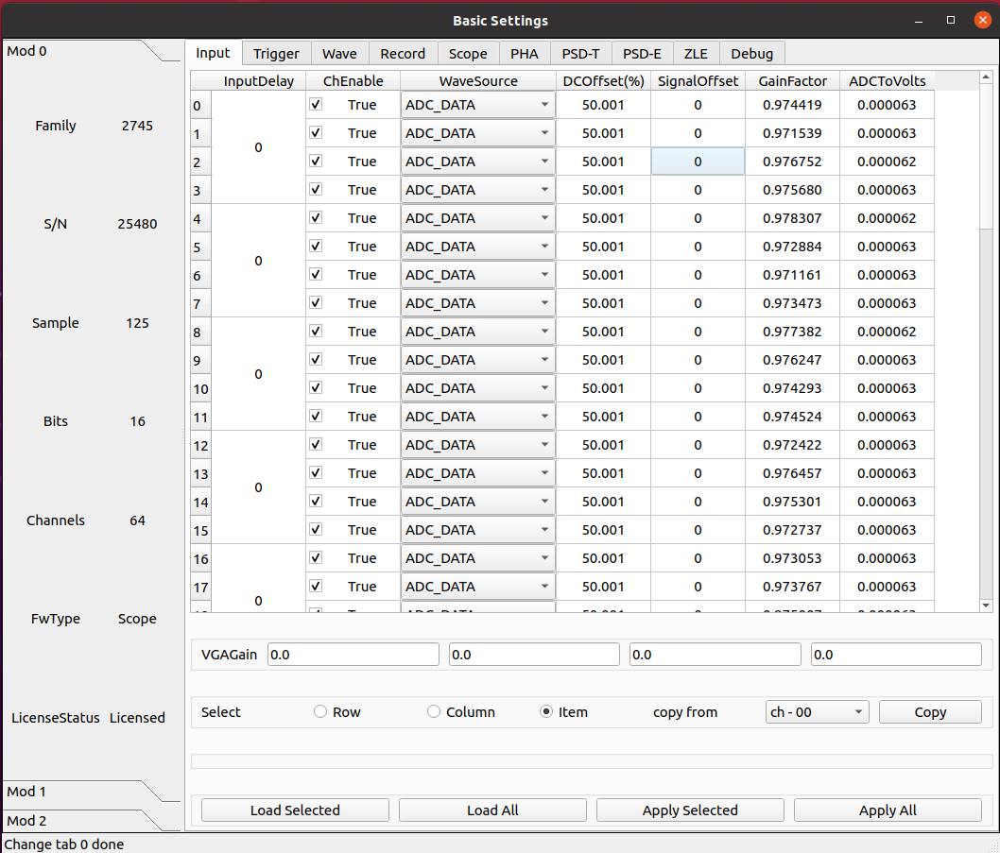
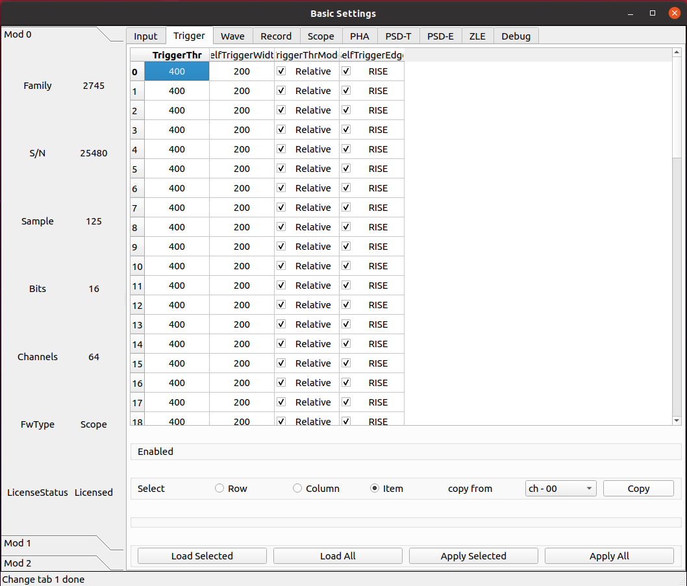
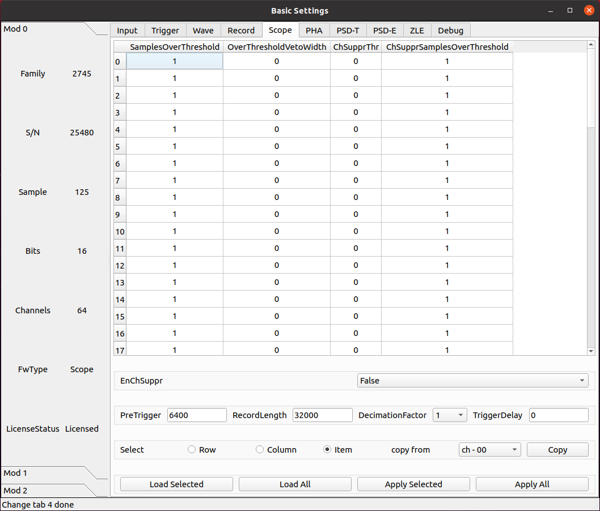
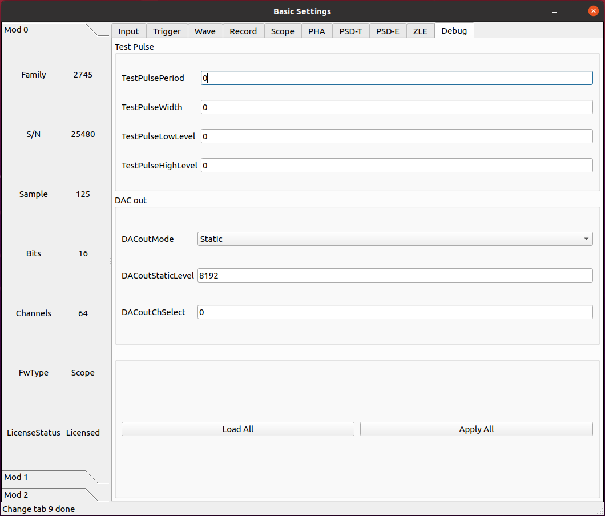
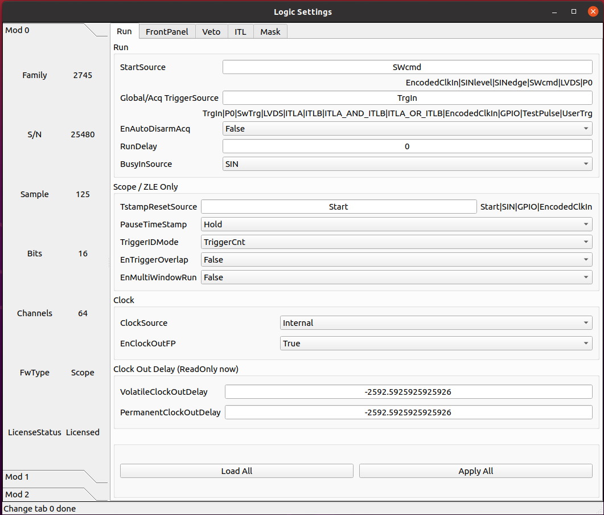
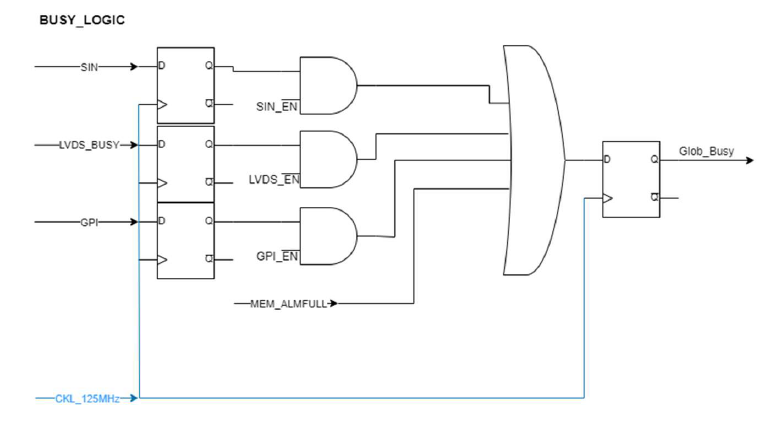
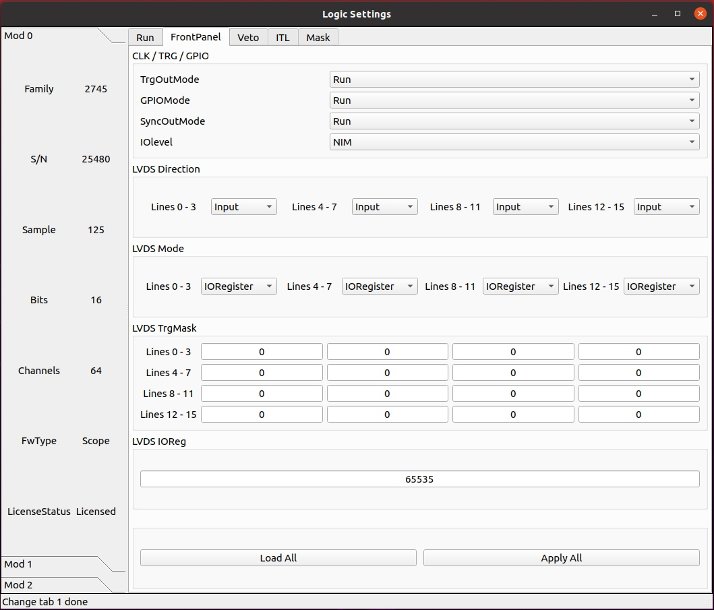
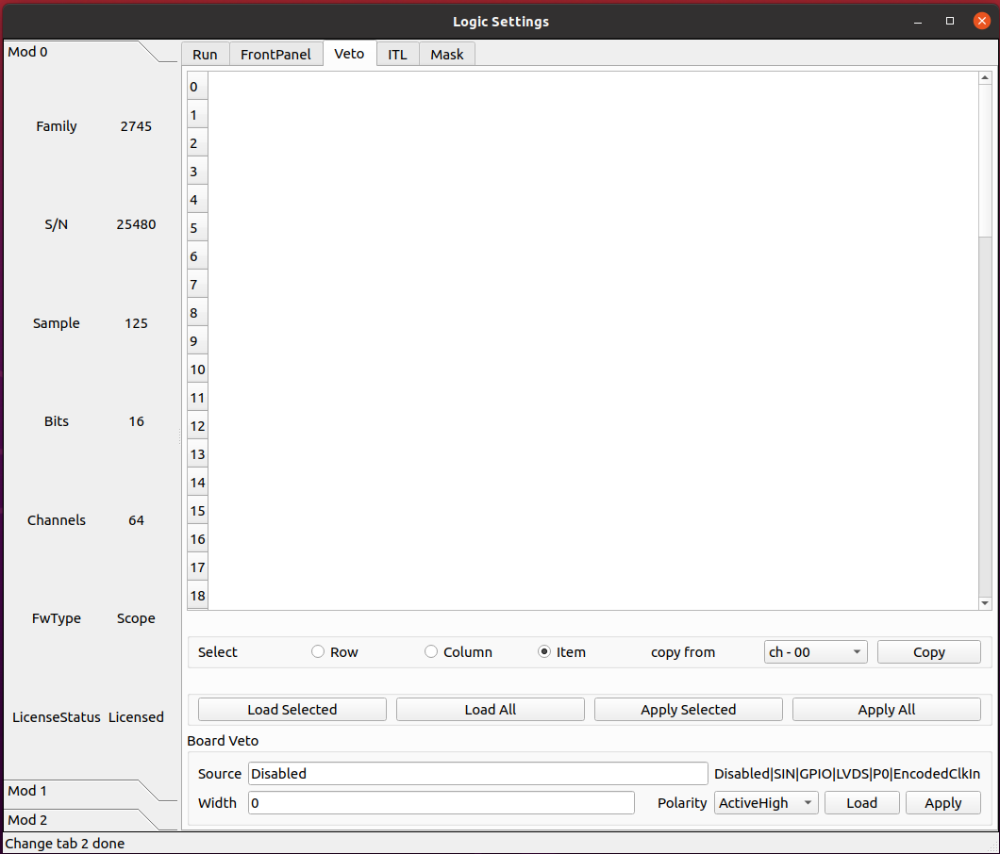
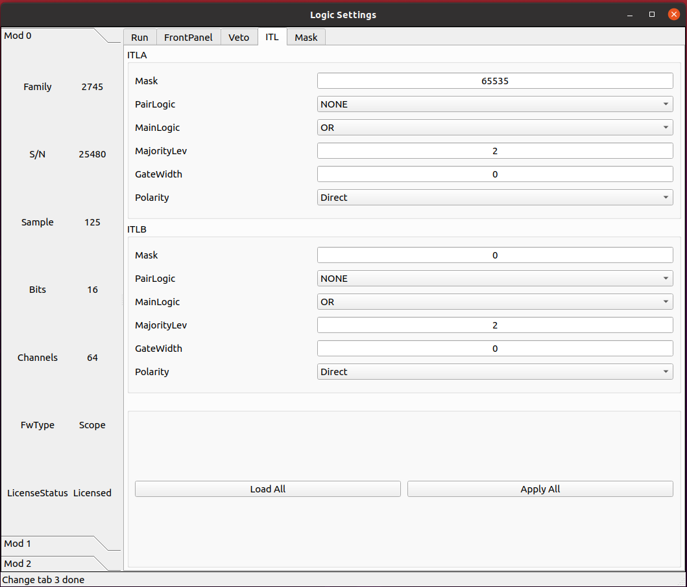
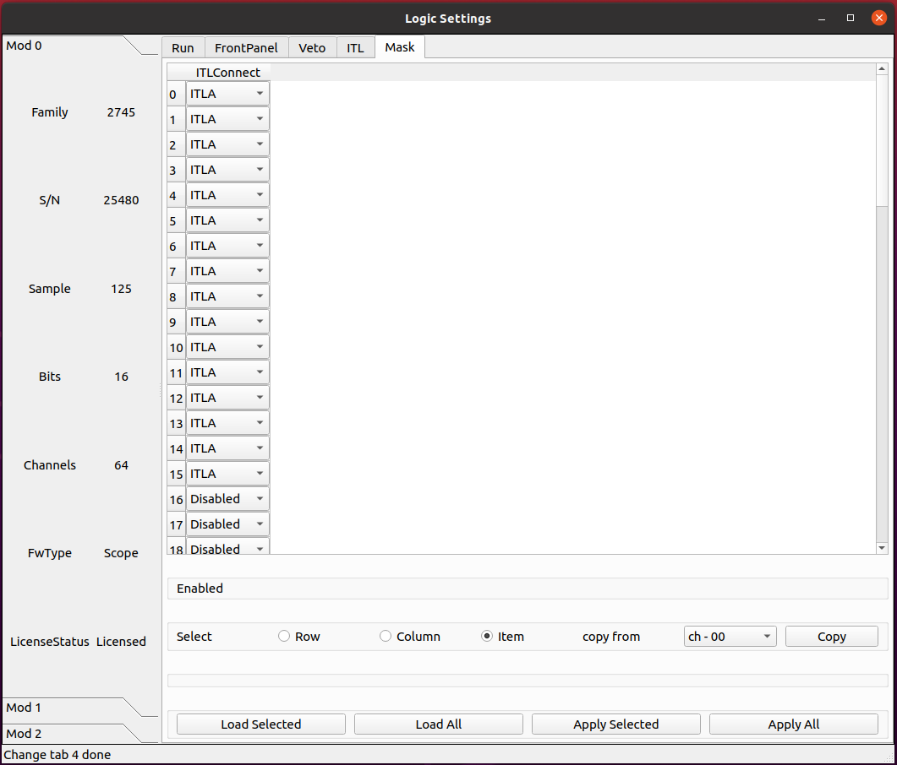

SCOPE 固件
基本参数配置
输入信号
参数 ChGain
仅限 x2730.
设置可变增益放大器（VGA）的增益。
Unit of Measure: dB
参数 InputDelay
设置输入延迟，单位为采样点。
该值设置每 4 个通道共用一个相同配置。
参数 ChEnable
独立设定每个通道是否开启使用。如果通道不启用，它不提供任何数据，同时它的自触发也关闭。
参数 WaveSource
在正常模式下，采集的波形来源于模拟输入的 A/D 转换产生的 ADC 采样序列。出于测试目的，可以用内部数据生成器替换 ADC 数据。
- ADC_DATA
Data from the ADC (normal operating mode)
- ADC_TEST_TOGGLE
Toggle between 0x5555 and 0xAAAA (test mode)
- ADC_TEST_RAMP
16-bit ramp pattern (test mode)
- ADC_TEST_SIN
8-point sine wave test pattern
- ADC_TEST_PRBS
16-bit PRBS generated by a 23-bit PRBS pattern generator (test mode)
- Ramp
Data from a ramp generator. It is actually a 16-bit field, where the 6 most significant bits identify the channel and the 10 less significant bits are the samples of a ramp from 0x000 up to 0x3FF (i.e. 0 to 1023). It is so a 10-bit ramp with offset given by “channel*1024”. For channel 0, it is a counter from 0 to 1023; for channel 1, it is a counter from 1024 to 2047, and so on
- IPE
Not implemented
- SquareWave
Internally generated programmable square wave
参数 DCOffset
对于每个通道，将恒定的 DC 偏移（由 16 位 DAC 控制）添加到模拟输入，以在 ADC 的动态范围内调整信号基线的位置（即模拟输入的“零伏”）。
由于部件的公差，有必要校准偏移 DAC。校准是通过工厂测试完成的，通常不需要重新校准。然而，可以执行新的校准。校准参数存储在板的闪存中，并在通电时加载。每次写入或读取 DCoffset 参数时，内部逻辑会自动应用这些参数。
DCoffset 参数为数字，单位为满刻度的百分比。当 DCoffset为 0 时，输入信号的基线处于 ADC 0。当 DCoffset 为 100 时，输入信号的基线处于 ADC $2^{NBIT}-1$。
参数 VGAGain
2745 特有。
以 0.5 dB 为步长设置可变增益放大器（VGA）的增益。参数设置每 16 个通道为一组， 64 通道分为 4 组。最小可设置为 0，最大为 40。
触发
参数 TriggerThr
数字化模块的每个通道都有一个数字前沿甄别器，该甄别器具有可编程阈值，能够对输入脉冲进行自触发，并产生一个自触发信号（或过阈值信号），馈送道内部触发逻辑或输出端口。
此参数设置触发阈值。典型地，该值是相对于信号的基线的，并且阈值是 17 位带符号的整数；在这种情况下，当 DCoffset 参数改变时，阈值自动跟随基线。有时，设置阈值的绝对值是更好的策略，该阈值相对于 ADC 道址的范围；在这种情况下，阈值是无符号的整数。
参数 SelfTriggerWidth
产生自触发信号的数字前沿甄别器的输出可以在“线性”模式下使用，这意味着它会持续信号保持在阈值以上（或以下）的时间，从而充当“过阈值”信号，或者可以通过可编程门产生器，使其成为固定宽度的脉冲。门产生器是不可再触发的单稳态，当超过阈值时变高，在编程时间后变低。该参数定义了过阈值的固定宽度脉冲。
参数 TriggerThrMode
定义触发阈值是相对于基线还是绝对阈值。
- Relative
The threshold is relative to the baseline and automatically follows it when the DCOffset parameter is changed.
- Absolute
The threshold is absolute, referred to the ADC input range. It does not follow the DCOffset setting.
参数 SelfTriggerEdge
定义自触发必须在阈值上升或下降时产生。同样地，当信号高于或低于阈值时，过阈值信号将为 TRUE。
- RISE
The trigger occurs on the rising crossing of the threshold and the OverThr is true when the signal is above the threshold
- FALL
The trigger occurs on the falling crossing of the threshold and the OverThr is true when the signal is below the threshold
scope
参数 SamplesOverThreshold
超过阈值的样点数。
参数 OverThresholdVetoWidth
Veto width to discard triggers when crossing the threshold in the opposite direction to the trigger one
参数 ChSupperThr
通道零抑制阈值。与 TriggerThr 共享的配置参数 TriggerThrMode 和 SelfTriggerEdge。
单位为整数， ADC 道址。
参数 ChSupperSamplesOverThreshold
通道零抑制超过阈值的采样点数。
参数 EnChSupper
启用通道零抑制。
- True
Channel zero-suppression is enabled
- False
Channel zero-suppression is disabled
参数 PreTrigger
触发在波形中的位置之前的时间（即预触发窗口的大小）。波形的实际大小将自动四舍五入到最接近的允许值。通过读回参数可以得到确切的数值。
单位为时间，ns
参数 RecordLength
波形大小（即采集窗口的大小）。波形的实际大小将自动四舍五入到最接近的允许值。通过读回参数可以得到确切的数值。记录时间长度取决于降频设置。
单位为时间，ns
参数 DecimationFactor
设置应用于模块标称采样频率的抽取因子。如果启用，则参数 RecordLength、PreTrigger 和 TriggerDelay 按照标称采样计算采样点数，实际两个采样点的间隔为抽取因子设置的时间间隔。
- 1
Decimation disabled (default)
- 2
Sampling Frequency / 2
- 4
Sampling Frequency / 4
- 8
Sampling Frequency / 8
- 16
Sampling Frequency / 16
- 32
Sampling Frequency / 32
- 64
Sampling Frequency / 64
- 128
Sampling Frequency / 128
- 256
Sampling Frequency / 256
- 512
Sampling Frequency / 512
- 1024
Sampling Frequency / 1024
参数 TriggerDelay
表示添加到采集触发器延迟的时间。此参数可用于获取在触发位置之后开始的窗口。
单位为时间，ns
诊断
参数 TestPulsePeriod
测试脉冲是一种可编程方波，可用作内部周期性触发器（主要用于测试目的）或在 TRGOUT 和 GPIO 输出上生成逻辑测试脉冲（TTL 或 NIM）。此参数设置测试脉冲的周期。
单位为时间，ns
参数 TestPulseWidth
测试脉冲的宽度（信号保持高电平的时间）。
单位为时间，ns
参数 TestPulseLowLevel
以 ADC 道址表示的测试脉冲低电平
参数 TestPulseHighLevel
以 ADC 道址表示的测试脉冲高电平
参数 DACoutMode
选择要在前面板 DAC LEMO口输出发送的信号类型。
- Static
DAC output stays at a fixed level, given by the DACoutStaticLevel parameter
- Ramp
The DAC output is driven by a 14-bit counter
- Sin5MHz
The DAC output is a sine wave at 5 MHz with fixed amplitude
- Square
Square wave with period and with set by TestPulsePeriod and TestPulseWidth and amplitude between TestPulseLoweLevel and TestPulseHighLevel.
- IPE
Not implemented
- ChInput
The DAC reproduces the input signal received by one input channel, selected by the DACoutChSelect parameter
- MemOccupancy
Level of the memory occupancy (not yet implemented)
- ChSum
The DAC reproduces the “analog” sum of all the digitizer inputs (not yet implemented)
- OverThrSum
The DAC output is proportional to the number of channels that are currently above the threshold
参数 DACoutStaticLevel
当 DACoutMode = Static 时，此参数设置 DAC 输出的 14 位电平。
参数 DACoutChSelect
当 DACoutMode = ChInput 时，DAC 输出由该参数选择的通道的输入信号。
参数 IPEAmplitude
The new digitizers are equipped with an Internal Pulse Emulator capable of generating exponential pulses. This parameter determines the amplitude of the pulse.
Unit of Measure: ADC counts
参数 IPEBaseline
Sets the offset of the exponantial pulses generated by the Internal Pulse Emulator.
Unit of Measure: ADC counts
参数 IPEDecayTime
Sets the decay time of the exponantial pulses generated by the Internal Pulse Emulator.
Unit of Measure: ns
参数 IPERate
Sets the rate of the exponantial pulses generated by the Internal Pulse Emulator.
Unit of Measure: Hz
参数 IPETimeMode
Selectes the time distribution of the Internal Pulse Emulator.
- ConstantRate
Pulse shapes are constant over time. It is possible to set the frequency using the IPERate parameter
- Poissonian
The pulse rate follows a Poisson distribution. The average frequency value can be configured using the IPERate parameter
逻辑参数配置
运行
参数 StartSource
Defines the source for the start of run. Multiple options are allowed, separated by “|”.
- EncodedClkIn
Start from CLK-IN/SYNC connector on the front panel. This is a 4-pin connector (LVDS signals) used to propagate the reference clock (typ. 62.5 MHz) and a Sync signal. The rising edge of the Sync starts the acquisition, that lasts until the Sync returns low (falling edge).
- SINlevel
Start from SIN (1=run, 0=stop)
- SINedge
Start from SIN (rising edge = run; stop from SW)
- SWcmd
Start from SW
- LVDS
Start from LVDS
- FirstTrigger
Start on 1st trigger (stop from SW)
- P0
Start from P0 (backplane)
参数 AcqTriggerSource
Defines the source for the Acquisition Trigger, which is the signal that opens the acquisition window and saves the waveforms in the memory buffers. Multiple options are allowed, separated by “|”.
- TrgIn
Front Panel TRGIN
- P0
Trigger from P0 (backplane)
- SwTrg
Software trigger
- LVDS
LVDS trgin
- ITLA
Internal Trigger Logic A: combination of channel self-triggers
- ITLB
Internal Trigger Logic B: combination of channel self-triggers
- ITLA_AND_ITLB
Second level Trigger logic making the AND of ITL A and B
- ITLA_OR_ITLB
Second level Trigger logic making the OR of ITL A and B
- EncodedClkIn
Not implemented (encoded CLK-IN trigger)
- GPIO
Front Panel GPIO
- TestPulse
Internal Test Pulse
- UserTrg
User custom trigger source
参数 EnAutoDisarmAcq
When enabled, the Auto Disarm option disarms the acquisition at the stop of run. When the start of run is controlled by an external signal, this option prevents the digitizer to restart without the intervention of the software.
- True
The acquisition is automatically disarmed after the stop. It is therefore necessary to rearm the digitizer (with the relevant command sent by the software) before starting a new run.
- False
The acquisition is not disarmed after the stop. Multiple transition of the start signal will produce multiple runs.
参数 RunDelay
When the start of run is controlled by a RUN signal that is propagated in daisy chain between the boards (for instance through the ClkIn- ClkOut or SIN-GPIO sync chain), it is necessary to compensate for the propagation delay and let the boards start exactly at the same time. The RunDelay parameter allows the start of the acquisition to be delayed by a given number of clock cycles with respect to the rising edge of the RUN signal. Assuming that the propagation delay is 2 cycles, the RunDelay setting will be 0 for the last board in the chain, 2 for the previous one, and so on up 2x(NB-1) for the first one.
Unit of Measure: ns
参数 BusyInSource
In a multi-board system, it might be necessary to prevent one board to accept a new trigger while another board is full and thus unable to accept the same trigger. For this reason, each board can generate a Busy signal to notify that it is unable to get a new trigger. If the busy/veto mechanism has some latency, it is advisable to generate the busy slightly before the digitizer become full. For this purpose, it is possible to assert the busy output when the acquisition memory reaches a certain level of occupancy (internally managed). The OR of the busy signals is typically used to stop the global trigger. It is possible to get the individual busy signals from each board and make an external OR logic or connect the boards with cables to propagate the Busy along the chain. Each board makes an OR between its internal busy and the busy input signal coming from the previous board, thus having a global Busy at the end of the line. This parameter defines the source of the Busy Input (schematized in the figure below)
- Disabled
The Busy is given by the Internal Busy only (Memory full or almost full)
- SIN
Busy input from SIN on front panel
- GPIO
Busy input coming from GPIO on front panel, used as a simple input. It is also possible to use GPIO as a wired OR (bidirectional). In this mode, the Busy line goes high as soon as one board drives it high. All the boards can read the Busy line and use it as a veto for the trigger
- LVDS
LVDS trgin
参数 TstampResetSource
Defines the source of the timestamp reset. Multiple options are allowed, separated by “|”. The timestamp of the board (internal counter running at 125 MHz) is typically reset at the start of each run, which corresponds to the “zero” of the timestamps. In Multi-board systems, the synchronization of the clock and RUN signals allows event data coming from different boards to be merged and correlated by the time stamp. However, it is possible to configure different ways to control the reset of the time stamp in the cases where it is necessary to synchronize it with an external global time stamping system.
- Start
Time stamp reset at the start of run
- SIN
SIN input
- GPIO
GPIO used as input
- EncodedClkIn
Not implemented (encoded in CLK-IN/SYNC)
参数 PauseTimeStamp
Allows the time stamp to either stop or run during the pauses of the acquisition
- Hold
The timestamp stops while pausing the acquisition
- Run
The timestamp runs while pausing the acquisition
参数 TriggerIDMode
The event data packet contains a 24-bit identifier called TriggerID. This can be the total trigger counter, the saved event counter or a pattern coming from the LVDS I/Os.
- TriggerCnt
The Event triggerID is associated to the total trigger counter. This is a 24-bit counter that is reset at the start of run and increased with every received trigger, including those ones that are not accepted. In this mode, events coming from multiple boards can be correlated by the triggerID that is supposed to by synchronized. There might be gaps due to lost triggers.
- EventCnt
The Event triggerID is a sequential number of the saved event. In this case, there are no gaps in the sequence, but it is not guaranteed that the trigger ID of multiple boards are aligned, thus it is not possible to use it for data correlation.
- LVDSpattern
The triggerID is taken from the 16 LVDS inputs at the time of the trigger arrival. The user can provide an external trigger pattern to correlate the event data between boards or even with other readout electronics
参数 EnTriggerOverlap
Allows a trigger occurring within the acquisition window of a previous trigger to be either accepted or rejected. When accepted, the previous window is prematurely closed and the new window immediately opened, without any dead time between the two.
- True
Triggers with overlapped acquisition windows are accepted.
- False
Triggers with overlapped acquisition windows are not accepted. The rejected triggers are counted by the total trigger counter, so that the trigger-ID in the event header allows for tracing the rejected triggers.
参数 EnMultiWindowRun
When the acquisition start and stop are controlled by an external “RUN” signal (e.g. feeding SIN), it is possible to configure the digitizer to work in two different modes:
The RUN signal acts as a start (rising edge) and stop (falling edge). Therefore, multiple transitions of the RUN signal cause multiple runs (provided that the Auto Disarm option is disabled). At every start of run, the timestamp is reset, and all the statistics and counters are cleared. Typically, the software produces different output files.
The RUN signal acts as “enable” of the acquisition: once the digitizer has been armed, the first rising edge of RUN starts the acquisition. When RUN goes down, the acquisition is “paused” rather than stopped. This means that all data and statistics are frozen, and the timestamp can be either stopped or left running, depending on the PauseTimeStamp parameter. The RUN signal can toggle multiple times within the same acquisition. The stop of the acquisition will be done by a software command. It is necessary to disarm and rearm the acquisition before starting a new run with the rising edge of the RUN signal.
- True
MultiWindow run is enabled. The RUN signal acts as start (first rising edge) and pause (subsequent falling edges) for the acquisition. The stop of the acquisition is always given by a software command
- False
The RUN signal acts as start and stop for the acquisition
参数 ClockSource
This is the source of the system clock. Multiple options are not allowed
- Internal
Local oscillator, 62.5 MHz
- FPClkIn
Front Panel Clock input
参数 EnClockOutFP
Enables clock output on Front Panel for the daisy chain propagation of the clock between multiple boards.
- True
Enabled
- False
Disabled
模块前面板
参数 TrgOutMode
Selects the signal that is routed to the TRGOUT output. Multiple options are not allowed.
- Disabled
TRGOUT output disabled
- TrgIn
Propagation of Front Panel TRGIN (TRGOUT is a replica, with some delay, of the TRGIN signal)
- P0
Propagation of P0 trigger
- SwTrg
Software trigger
- LVDS
LVDS trgin
- ITLA
Internal Trigger Logic A: combination of channel self-triggers
- ITLB
Internal Trigger Logic B: combination of channel self-triggers
- ITLA_AND_ITLB
Second level Trigger logic making the AND of ITL A and B
- ITLA_OR_ITLB
Second level Trigger logic making the OR of ITL A and B
- EncodedClkIn
Not implemented (propagation of the Encoded CLK-IN trigger)
- Run
Propagation of the RUN signal (acquisition start/stop), before applying the delay given by the RunDelay parameter
- RefClk
Monitor of the 62.5 MHz clock (used for phase alignment)
- TestPulse
Internal Test Pulse
- Busy
Busy of the board
- UserTrgout
Trgout coming from the User Logic (open FPGA)
- Fixed0
0 level signal
- Fixed1
1 level signal
- SyncIn
SyncIn signal
- SIN
SIN connector signal
- GPIO
GPIO connector signal
- LBinClk
Internal Logic B clock signal
- AcceptTrg
Accepted triggers signal
- TrgClk
Tigger clock signal
参数 GPIOMode
Selects the signal that is routed to the GPIO, when this is used as output. Multiple options are not allowed. The GPIO on the front panel is a bidirectional signal that can used in three different ways:
As independent board output (each board drives its own GPIO)
As a shared input for the boards: the signal is driven high (= 1) or low (= 0) by an external source and connected in “short circuit” among multiple boards using “T” connectors at the inputs. The GPIO is not internally terminated, thus it is necessary to put a 50 Ohm terminator at the end of the line (last “T”of the chain)
As a shared bidirectional line, making a “wired OR”. One or more boards can simultaneously drive the signal high (= 1). If no board drives the GPIO, it remains low (= 0). All boards can read back the signal. It is necessary to put a 50 Ohm terminator at both ends of the line (first and last “T” of the chain). This mode can be used to generate, for instance, the global Busy and Veto logic for multiple boards.
- Disabled
GPIO disabled
- TrgIn
Propagation of Front Panel TRGIN (GPIO is a replica, with some delay, of the TRGIN signal)
- P0
Propagation of P0 trigger
- SIN
Propagation of SIN
- LVDS
LVDS trgin
- ITLA
Internal Trigger Logic A: combination of channel self-triggers
- ITLB
Internal Trigger Logic B: combination of channel self-triggers
- ITLA_AND_ITLB
Second level Trigger logic making the AND of ITL A and B
- ITLA_OR_ITLB
Second level Trigger logic making the OR of ITL A and B
- EncodedClkIn
Not implemented (propagation of the Encoded CLK-IN trigger)
- SwTrg
Software trigger
- Run
Propagation of RUN
- RefClk
Monitor of the 62.5 MHz clock (used for phase alignment)
- TestPulse
Internal Test Pulse
- Busy
Busy of the board
- UserGPO
GPO coming from the User Logic (open FPGA)
- Fixed0
0 level signal
- Fixed1
1 level signal
参数 SyncOutMode
In a multi-board system, it can be useful to propagate a synchronous signal together with the clock (to synchronize the start of the run, for example) on CLK OUT front panel connector. This parameter defines which signal must be sent out. Multiple options are not allowed.
- Disabled
SyncoutMode is disabled
- SyncIn
SyncIn signal (if provided with clkIn on CLK IN connector)
- TestPulse
Internal Test Pulse
- IntClk
Internal 62.5 MHz clock (for test purposes)
- Run
Propagation of RUN signal
- User
User custom SyncoutMode
参数 IOlevel
Sets the electrical logic level of the LEMO I/Os (TRGIN, SIN, TRGOUT, GPIO).
Note that TRGIN and SIN are internally terminated to 50 Ohm, while GPIO and TRGOUT require the termination to 50 Ohms at the receiver
- NIM
NIM logic (0 = 0V, 1 = -0.8V, that is -16mA)
- TTL
Low Voltage TLL logic (0 = 0V, 1 = 3.3V)
参数 LVDSDirection
Assigns the direction to a quartet of LVDS I/Os.
- Input
The LVDS lines of the relevant quartet are used as input. The relevant LED on the front panel is OFF.
- Output
The LVDS lines of the relevant quartet are used as output. The relevant LED on the front panel lights-up.
参数 LVDSMode
The digitizer is equipped with 16 LVDS I/Os that can be programmed to be inputs or outputs by groups of 4 (quartets), depending on the LVDSDirection parameter. Once the direction has been selected, it is possible to select the functionality of the LVDS lines, individually for each quartet.
- SelfTriggers
This option is available only when the LVDS are set as outputs. Each LVDS line can be assigned to a combination of the 64 self-triggers, implemented as a masked OR, where the mask is set by the LVDSTrgMask parameter(16 independent masks, one per LVDS line)
- Sync
Whatever is the direction of the quartet, the 4 lines are rigidly assigned to specific acquisition signals: 0 = Run 1 = Trigger 2 = Busy 3= Veto It is possible to implement a daisy chain distribution of these signals using one quartet as input and another one as output
- IORegister
The LVDS lines of the quartet are statically controlled by the LVDSIOReg parameter. Use the SetValue function to set the relevant LVDS lines when programmed as output. Use GetValue to read the status of the LVDS lines when programmed as inputs.
- User
User custom.
参数 LVDSTrgMask
Each LVDS line can be assigned to a combination of the 64 self-triggers, implemented as a masked OR, where the mask is set by this parameter. There are 16 independent masks, one per LVDS line. Note that the trigger mask assignment does not imply the LVDS direction and mode settings. It is therefore necessary to set the Direction = Output and Mode = SelfTriggers to use the Self-Trigger propagation to the LVDS I/Os.
参数 LVDSIOReg
Set the status of the LVDS I/O for the quartets when they are programmed to be output and Mode = IORegister. This parameter reads out the status of the quartets in the case the LVDS I/O are programmed as inputs (possibly externally driven).
反符合
参数 VetoSource
Defines the source for the Veto, which is the signal that inhibits the acquisition trigger. Multiple options are allowed, separated by “|”. The VETO signal can be either active high or low, depending on the VetoPolarity parameter. When active low, it acts as a GATE for the trigger. It is possible to stretch the duration of the VETO by means of the parameter VetoWidth.
- Disabled
VETO is always OFF
- SIN
SIN on the front panel
- GPIO
GPIO on the front panel (used as input)
- LVDS
LVDS trgin
- P0
P0 (signal from the backplane)
- EncodedClkIn
Not implemented (encoded CLK-IN veto)
参数 VetoWidth
Whatever is the source of the VETO signal, it is possible to stretch the duration of the veto up to a given time by means of a re-triggerable monostable. When 0, the monostable is disabled and the veto lasts as long as the selected source is active.
Unit of Measure: ns
参数 VetoPolarity
Defines the polarity of the Veto
- ActiveHigh
Veto is active high. The signal acts as an “Inhibit” for the trigger
- ActiveLow
Veto is active low. The signal acts as a “Gate” the trigger
ITL 逻辑

参数 ITLA/BMask
Enable Mask at the input of the ITLA/B.
参数 ITLA/BPairLogic
Pairs of channels can be combined with an OR or AND before feeding in the Main trigger Logic. This is typically used in the readout of tubes or scintillator bars, where the two ends are read in coincidence, for instance in position sensitive detectors (the coincidence window will be set by the SelfTriggerWidth parameter). When the AND/OR logic is applied, the two outputs of the Pair Logic blocks are identical.
Note that they are counted twice in the following Majority logic. If the Pair Logic is disabled (“NONE” option), the block is transparent, and the two outputs are just a replica of the inputs.
- OR
Both Pair Logic Outputs = OR of two consecutive self-triggers
- AND
Both Pair Logic Outputs = AND of two consecutive self-triggers
- NONE
Outputs = Inputs
参数 ITLA/BMainLogic
Each channel of the digitizer feature a digital bipolar triangular filter discriminator with programmable rise time and threshold able to self-trigger on the input pulses and generate a self-trigger signal. In DPP Mode, the channels acquire independently, so the channel self-trigger is used locally to acquire a waveform. The trigger threshold is then referred to the bipolar triangular filter, and the threshold crossing arms the event selection. The trigger fires at the zero crossing of the time filter signal. The user can see the derivative trace on the signal inspector. It is also possible to combine all the self-triggers of the board, according to a specific trigger logic. There are two independent logic blocks, ITLA and ITLB. Their output can be used separately to feed, for instance, AcqTrigger and TrgOut, or combined in a second level trigger logic to implement more complex trigger schemes. Therefore, the ITLs can either generate the local acquisition trigger, common to all the channels, for the acquisition of the waveform, or propagate the signal outside, through the TRGOUT, thus making it possible to combine triggers of multiple boards in an external trigger logic, that eventually feeds back the TRGIN of the digitizers. Each ITL is made of an input enable mask (64 bits, one per channel), an optional pairing logic that combines the self triggers of two consecutive channels (e.g. paired coincidence) and the main trigger logic that combines the 64 selftriggers with an OR, AND or Majority logic. The output can be linear (no stretching) or reshaped by a programmable gate generator, either re-triggerable or not and finally programmed for polarity (direct or inverted).
- OR
ITLOUT = masked OR of channel self-triggers
- AND
ITLOUT = masked AND of channel self-triggers
- Majority
ITLOUT = masked Majority of channel self-triggers
参数 ITLA/BMajorityLev
Defines the majority level of the Main Logic of the ITL A/B block. The majority output is calculated at every clock cycle, and it becomes TRUE when Nch >= MajLev, where Nch is the number of self-triggers active in that clock cycle and MajLev is the programmed majority level.
Note that when the Pair Logic is used to combine the self triggers two by two (AND/OR), each pair produces two identical signals that will be counted twice in the majority level.
参数 ITLA/BGateWidth
Width of the gate generator at the output of the ITLA/B block.
Unit of Measure: ns
参数 ITLA/BPolarity
Polarity of the gate generator output.
- Direct
Direct polarity
- Inverted
Inverted polarity
参数 ITLA/BEnRetrigger
Set the ITLA/B to be retriggerable.
- True
The ITLA/B is retriggerable
- False
The ITLA/B is not retriggerable
延迟展宽
parameter ITLConnect
Alternative to ITLAMask, ITLBMask. Determines if the channel partecipate in ITLA or ITLB
- Disabled
The channel is disabled
- ITLA
The channel participates in ITLA logic block
- ITLB
The channel participates in ITLB logic block